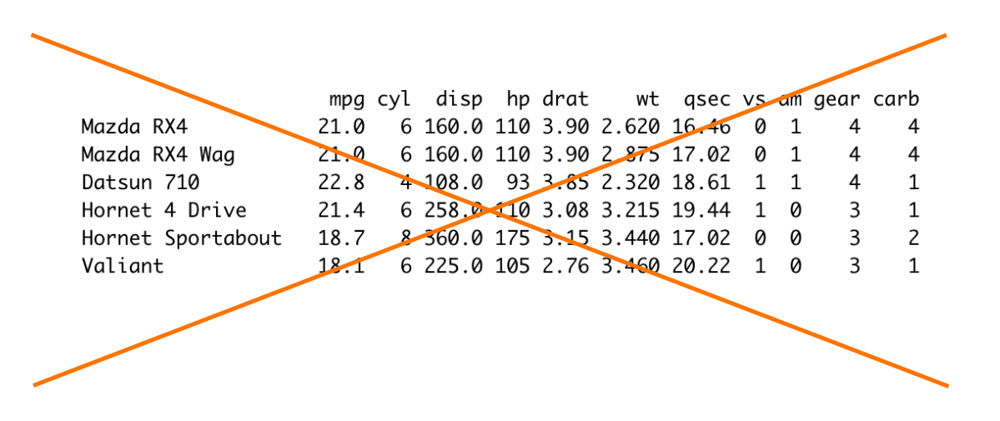
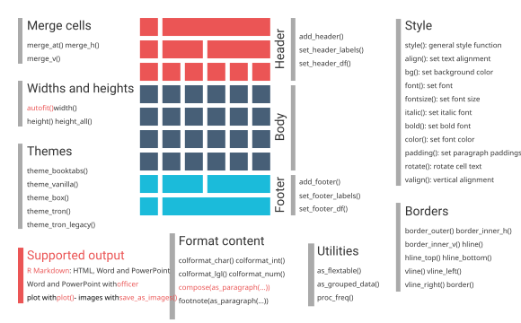
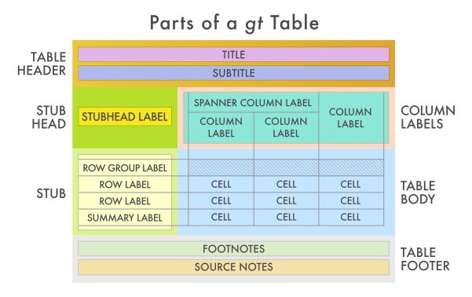
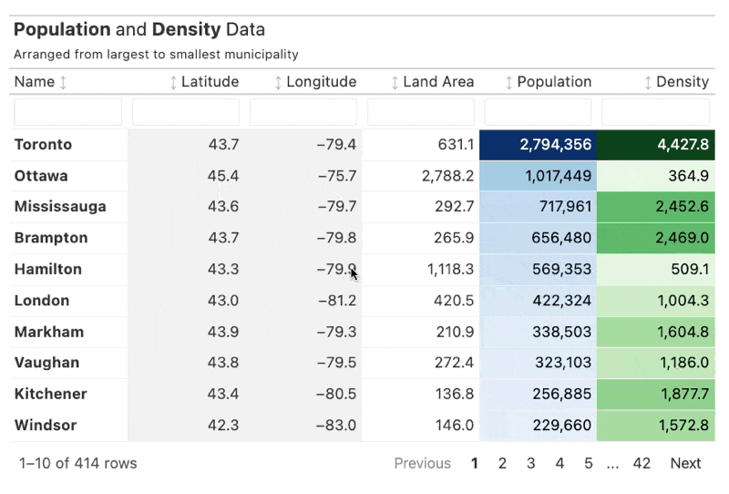
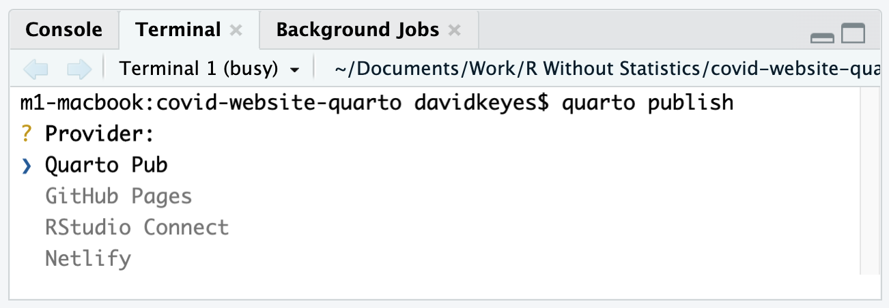
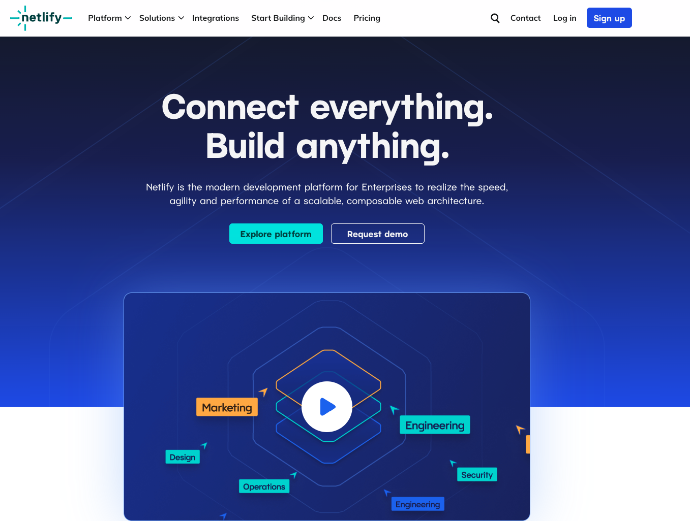

Images are centered by default but you can change this.
And here is what Abraham Lincoln said:
Four score and seven years ago …
Here is some text.1
I’ll create a Quarto document and do the following:
Add a link
Add an image and adjust its alignment and alt text
Add a blockquote
Add a footnote
Add the Oregon Department of Education logo to the top of your report. You can find it at the link below.
Add the following text (make sure you include the link, which is below):
This is a report for the Oregon Department of Education on diversity in Oregon school districts.
The Oregon Department of Education fosters equity and excellence for every learner through collaboration with educators, partners, and communities.
# A tibble: 10 × 3
year school percent_proficient_formatted
<chr> <chr> <chr>
1 2018-2019 Abernethy Elementary School 71%
2 2021-2022 Abernethy Elementary School 79%
3 2018-2019 Ainsworth Elementary School 80%
4 2021-2022 Ainsworth Elementary School 68%
5 2018-2019 Alameda Elementary School 83%
6 2021-2022 Alameda Elementary School 82%
7 2018-2019 Arleta Elementary School 42%
8 2021-2022 Arleta Elementary School 52%
9 2018-2019 Atkinson Elementary School 51%
10 2021-2022 Atkinson Elementary School 58% # A tibble: 5 × 3
school `2018-2019` `2021-2022`
<chr> <chr> <chr>
1 Abernethy Elementary School 71% 79%
2 Ainsworth Elementary School 80% 68%
3 Alameda Elementary School 83% 82%
4 Arleta Elementary School 42% 52%
5 Atkinson Elementary School 51% 58% pivot_wider()# A tibble: 10 × 3
year school percent_proficient_formatted
<chr> <chr> <chr>
1 2018-2019 Abernethy Elementary School 71%
2 2021-2022 Abernethy Elementary School 79%
3 2018-2019 Ainsworth Elementary School 80%
4 2021-2022 Ainsworth Elementary School 68%
5 2018-2019 Alameda Elementary School 83%
6 2021-2022 Alameda Elementary School 82%
7 2018-2019 Arleta Elementary School 42%
8 2021-2022 Arleta Elementary School 52%
9 2018-2019 Atkinson Elementary School 51%
10 2021-2022 Atkinson Elementary School 58% # A tibble: 5 × 3
school `2018-2019` `2021-2022`
<chr> <chr> <chr>
1 Abernethy Elementary School 71% 79%
2 Ainsworth Elementary School 80% 68%
3 Alameda Elementary School 83% 82%
4 Arleta Elementary School 42% 52%
5 Atkinson Elementary School 51% 58% 
flextable
gt
gt
I’ll demonstrate making effective tables using flextable and gt.
Copy the starter code below into RStudio and use it to make a table using flextable or gt.
Work on adjusting your column names, column width, number formatting, and anything else you might want to try out.
Choose how many levels of headings should be included in the table of contents
```{r}
#| fig-width: 3
#| fig-height: 5
penguins |>
filter(year == 2007) |>
count(island) |>
ggplot(aes(x = n,
y = reorder(island, n),
fill = island,
label = n)) +
geom_col() +
geom_text(family = "Papyrus") +
labs(title = "My Amazing Penguins Chart") +
theme_minimal(base_family = "Papyrus") +
theme(axis.text = element_text(family = "Inter"))
``````{r}
#| fig-cap: A plot about penguins
#| fig-alt: A bar chart showing the number of penguins on each island
penguins |>
filter(year == 2007) |>
count(island) |>
ggplot(aes(x = n,
y = reorder(island, n),
fill = island,
label = n)) +
geom_col() +
geom_text(family = "Papyrus") +
labs(title = "My Amazing Penguins Chart") +
theme_minimal(base_family = "Papyrus") +
theme(axis.text = element_text(family = "Inter"))
```Add a table of contents and adjust where it goes
Set default figure width and height
Change the figure width and height in an individual code chunk
Add a figure caption and alt text
Add a table of contents and adjust where it goes
Set default figure width and height
Change the figure width and height in an individual code chunk
Add a figure caption and alt text
These two lines of text look identical, right?
There are 210 school districts in Oregon.
There are 210 school districts in Oregon.
They’re not identical!
There are 210 school districts in Oregon.
I’ll add a line to my report that uses inline R code.
Add a line to your report that uses inline R code.
I’ll use a reference document to change the look and feel of my report that is rendered to Word.
Use a reference document to change the look and feel of your report when rendered to Word.
Show typst.app
typsttypstbrand.ymlCreate a PDF document using the typst format
Add page breaks to make my report easier to read
typst formatmax-widthmainfontfontsizefontcolorlinkcolormonofontmonobackgroundcolorlinestretchbackgroundcolormargin-left, margin-right, margin-top, margin-bottom.scss File.scss File.scss FileApply my brand.yml file to my HTML file.
Apply a built-in HTML theme to my report.
Customize the built-in HTML theme.
Create my own theme using an .scss file, Sass variables, and some custom CSS.
Create and apply a brand.yml file to your HTML file.
Apply a built-in HTML theme to your report.
Customize the built-in HTML theme.
Create your own theme using an .scss file and Sass variables
If you know any CSS, customize your .scss file further.
Content in column 1
Content in column 2
You can incrementally reveal
content by putting it in a bulleted list
and adding incremental: true to the YAML
incremental divRevealjs will apply styles set in brand.yml
Revealjs has built-in themes
There are also custom Revealjs themes
You can customize further using a .scss file
.notes class:Allows you to see:
Speaker notes
Upcoming slide
Timer
Turn my report into a Revealjs presentation
Demonstrate putting content in columns and using incremental reveal
Adjust the look-and-feel of my presentation by adding a logo and footer text, adjusting slide backgrounds, and using a custom theme
Demonstrate how to present using Revealjs slides
Turn your report into a Revealjs presentation
Demonstrate putting content in columns and using incremental reveal
Adjust the look-and-feel of your presentation by adding a logo and footer text, adjusting slide backgrounds, and using a custom theme
Practice presenting using Revealjs slides
First-level headers make pages
Second-level headers make rows or columns
Code chunks make cards
By default, dashboard content will fill the space available on the screen
You can also make your content scroll using the YAML
Exactly the same as HTML and Revealjs presentations:
Custom themes
You can customize further with .scss file
To make a website, you need to create a new project
You can create a website with a set of .qmd files and a _quarto.yml file to tie them all together
_quarto.ymlproject:
type: website
website:
title: "Portland Public Schools Math Proficiency"
navbar:
logo: "portland-public-schools-logo.svg"
left:
- href: index.qmd
text: "Home"
- href: about.qmd
text: "About this Website"
page-footer:
left: "Copyright 2023, Portland Public Schools"
format:
html:
theme: cosmo
mainfont: "Inter"Render individual pages with the Render button
Render the entire website with the Render Website button


I’ll publish my website to Quarto Pub and Netlify
Publish your website to Quarto Pub or Netlify
lightbox, downloadthis, nutshell{kind=link}